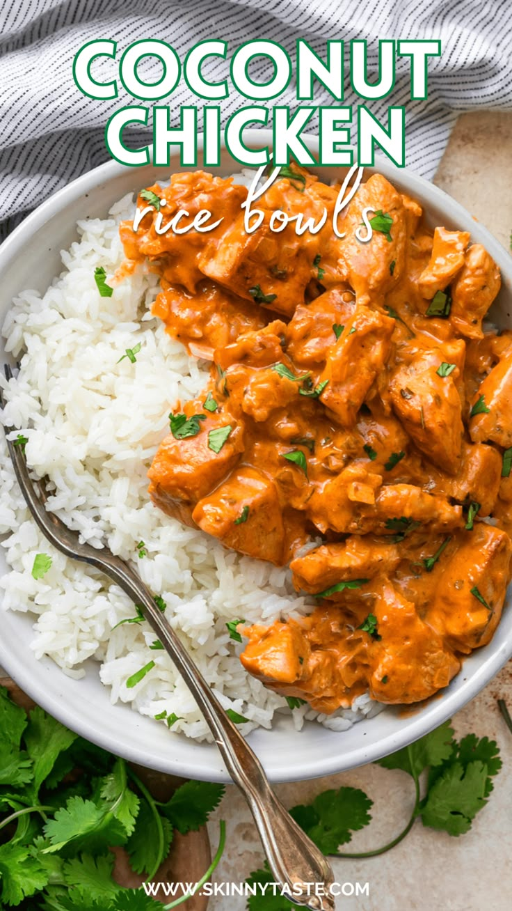

Coconut Chicken

Quick and easy high-protein Coconut Chicken bowl is perfect for lunch or
dinner and gluten and dairy-free!
This rice bowl is like a coconut curry, but without the red curry paste,
which you can most definitely add! the chicken is served over basmati or
jasmine rice.
Home
Ingredients for Spicy Sriracha Lime Chicken Zoodle Soup
chicken
- 1 1/2 pounds diced chicken breast
- 1 tsp kosher salt
- 1 tsp smoked paprika
- 1 tsp dried oregano or dried herbs
Sauce
- 1/2 onion, minced
- 3 cloves of garlic
- 1 tsp fresh grated ginger or more if you like it extra gingery
- 1/4 Cup chicken broth
- 1 1/4 Cup canned light coconut milk
- 1 TBSP tomato paste
- 1/2 tsp kosher salt
For the bowls:
- Fresh cilantro
- 3 Cups cooked jasmine rice or basmati
- more coconut milk, optional for topping
Instructions
- Season the chicken with salt, paprika, and dried herbs
-
Preheat a large skillet over high heat and spray with oil then brown the
chicken in an even layer, 3-5 minutes
-
Once browned , remove the chicken, reduce heat a spray with more oil.
Add the onion, garlic, ginger, and cook for 1 minute, then add the broth
to deglaze the pan
-
Bring the sauce to a simmer for a few minutes to thicken, add the
chicken back along with any juices and cook on medium heat 3 to 4
minutes
-
Serve over jasmine or basmati rce and garnish with cilantro and drizzle
with more coconut milk, if desired.